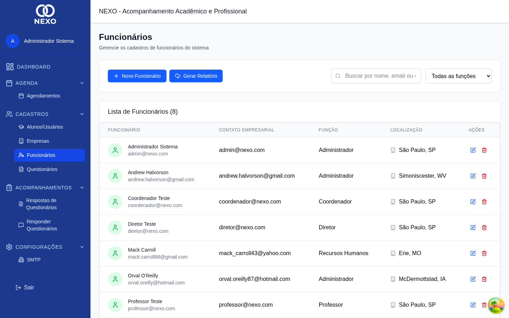
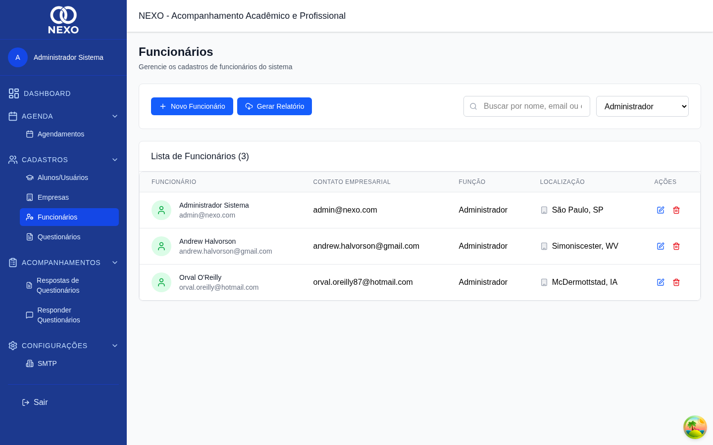
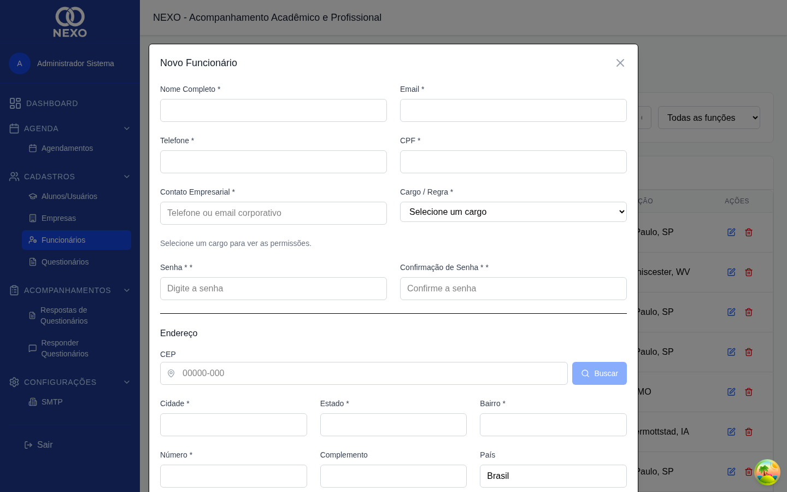
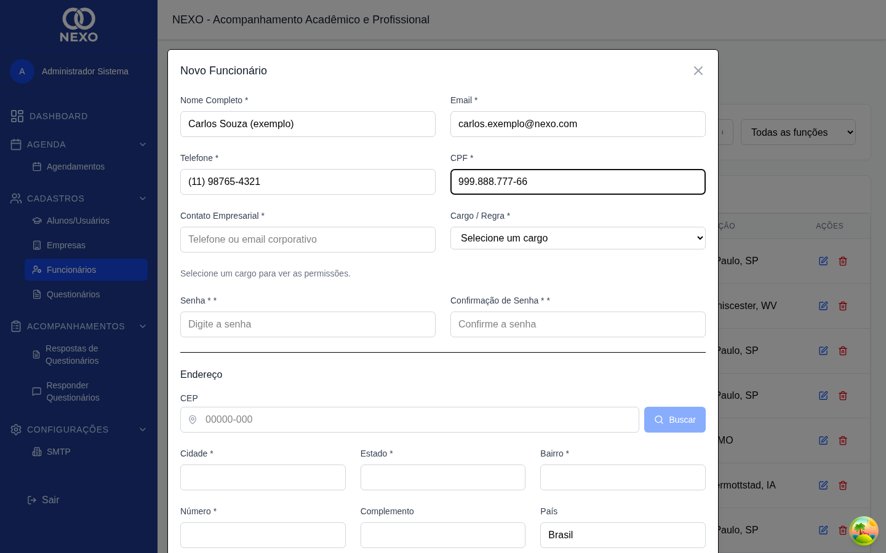
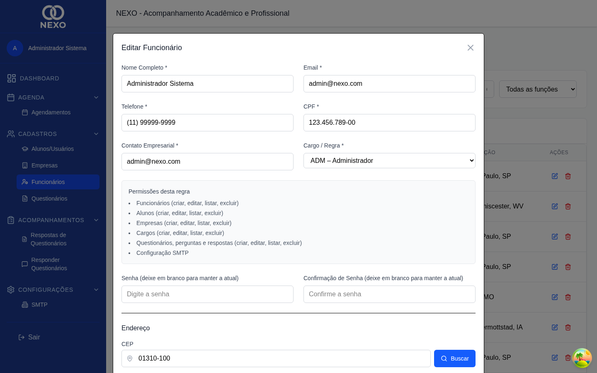

Funcionários
Funcionários são os usuários que acessam o sistema. Cada um tem um cargo (função) que define o que pode ver e fazer. Apenas ADM e RH têm acesso a esta tela.
| Ação | ADM | RH | COORD | PROF | DIR |
|---|---|---|---|---|---|
| Listar funcionários | ✓ | ✓ | — | — | — |
| Criar / editar / excluir | ✓ | ✓ | — | — | — |
1. Acessar a lista
No menu, abra Cadastros → Funcionários. A lista mostra nome, e-mail, CPF, função e telefone. Use o filtro "Função" para ver apenas um cargo de cada vez (ADM, RH, COORD, PROF ou DIR).


2. Cadastrar um novo funcionário
-
Clicar em "Novo Funcionário"
Abre o formulário com os campos pessoais, endereço, cargo e senha.

Formulário em branco com campo de senha. -
Preencher dados pessoais e endereço
Nome, e-mail (usado para login), telefone, CPF e endereço (com busca automática por CEP).
-
Escolher a função
Selecione a função que define as permissões: ADM, RH, COORD, PROF ou DIR. A tabela de permissões está na visão geral do manual.
-
Definir a senha inicial
Digite a senha e repita no campo Confirmar Senha. O usuário poderá alterá-la depois usando "Esqueci minha senha" (veja Acesso).

Cadastro completo, pronto para salvar. -
Salvar
Clique em Salvar. O novo usuário já pode entrar.
3. Editar um funcionário
Ao editar, os campos de senha são opcionais: deixe em branco para preservar a senha atual; preencha para definir uma nova.

Não exclua o próprio usuário enquanto estiver logado nele. Use sempre outro administrador para fazer a exclusão.